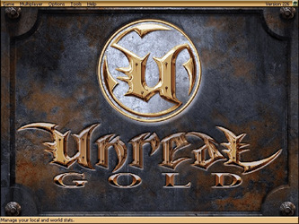
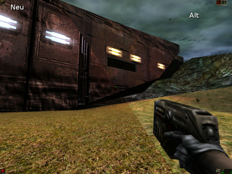

Unreal
Artikel wird überarbeitet
Dieser Artikel wird momentan überarbeitet.
Geplante Fertigstellung: 12.12.2017
Derzeitig gültiger Artikel: Archiv/Spiele/Unreal
Bearbeiter: march
Solltest du dir nicht sicher sein, ob an dieser Anleitung noch gearbeitet wird, kontrolliere das Datum der letzten Änderung und entscheide, wie du weiter vorgehst.
Achtung: Insbesondere heißt das, dass dieser Artikel noch nicht fertig ist und dass wichtige Teile fehlen oder sogar falsch sein können. Bitte diesen Artikel nicht als Anleitung für Problemlösungen benutzen!
Archivierte Anleitung
Dieser Artikel wurde archiviert, da er - oder Teile daraus - nur noch unter einer älteren Ubuntu-Version nutzbar ist. Diese Anleitung wird vom Wiki-Team weder auf Richtigkeit überprüft noch anderweitig gepflegt. Zusätzlich wurde der Artikel für weitere Änderungen gesperrt.
Zum Verständnis dieses Artikels sind folgende Seiten hilfreich:
Unreal® ist ein First-Person-Shooter, der im Jahr 1998 von GT-Interactive veröffentlicht wurde. Dem Spiel war kein so großer kommerzieller Erfolg wie dem zeitnah erschienenem Half-Life beschieden, dennoch revolutionierte es mit seiner bis dahin nicht gesehenen grafischen Darstellung und der auch heute noch beeindruckenden KI das Genre.
Um Unreal unter Ubuntu zu spielen gibt es zwei Möglichkeiten. Zum einen kann das Spiel schlichtweg mit Wine ausgeführt werden, womit Unreal gut funktioniert. Zum anderen gibt es mittlerweile einen inoffiziellen Patch, der das Spiel nativ unter Linux lauffähig macht, und dabei auch Fehlerkorrekturen sowie Optimierungen einpflegt. Letzteres ist natürlich die empfehlenswerte Methode; trotzdem werden in diesem Artikel auch Tipps für Wine aufgeführt, falls es mit dem Patch Probleme geben sollte. In jedem Fall ist eine funktionale 3D-Beschleunigung [4] der Grafikkarte nötig.
|  |  |
| Hauptmenü | Spielszene |
Installation¶
Standard¶
Die Installation lässt sich einfach erledigen indem die Setup.exe auf der Unreal-CD mit Wine ausgeführt wird [2] und man den Anweisungen folgt.
Manuell¶
Schlägt die Installation per Wine fehl, kann man das Spiel einfach wie folgt manuell installieren:
Ordner unreal erstellen.
Die Verzeichnisse Maps, Music, Sounds, System und Textures von der Spiel-CD in den Ordner kopieren.
Vor der Installation des Patches das Spiel einmalig mit Wine starten (die Fehlermeldung kann ignoriert werden).
Im Anschluss wie nachfolgend beschrieben den Patch installieren.
Unreal nativ unter Linux nutzen¶
Nachdem Unreal installiert wurde, lädt man sich nun den inoffiziellen Patch 227 herunter, welcher im Abschnitt Windows and Linux files zu finden ist. Paradoxerweise muss auch dieser Patch mit Wine ausgeführt werden um ihn installieren zu können. Anschließend muss die Datei UnrealLinux.bin im Unterverzeichnis System mittels chmod ausführbar gemacht werden. Nun kann Unreal über diese Datei nativ, ohne Wine, unter Ubuntu ausgeführt werden. Die Erweiterten Einstellungen sind in aktueller Version des Patches (227f) nicht im Spiel anwählbar. Möchte man hier etwas ändern, muss die Datei Unreal.ini (ebenfalls im Verzeichnis System) mit einem Texteditor [3] bearbeitet werden.
Unreal für Wine optimieren¶
Sollte die native Methode nicht funktionieren oder möchte man vielleicht keine inoffiziellen Patches benutzen, ist nun im folgenden beschrieben, wie Unreal für Wine optimiert werden kann.
Letzter offizieller Patch¶
Zuerst sollte man den finalen Patch auf die Version 2.26Final installieren. Diesen bekommt man hier  . Die Installation erfolgt per Wine [2].
. Die Installation erfolgt per Wine [2].
OpenGL-Unterstützung¶
Um die OpenGL-Unterstützung in Unreal zu aktivieren, lädt man sich das OpenGL-Update herunter. Die Dateien werden entpackt [5] und in das Unreal System-Verzeichnis kopiert. Bestehende Dateien bitte überschreiben. Damit OpenGL von Unreal verwendet wird muss die Datei unreal.ini im Unterordner System mit einem Editor [3] bearbeitet werden. Folgende Einträge müssen geändert werden:
[Engine.Engine] GameRenderDevice=OpenGLDrv.OpenGLRenderDevice ... WindowedRenderDevice=OpenGLDrv.OpenGLRenderDevice RenderDevice=OpenGLDrv.OpenGLRenderDevice
Grafik aufwerten¶
Die Grafiktexturen von Unreal liegen, für die damalige Zeit typisch, in recht niedrigen Auflösungen vor. Auch hohe Bildschirmauflösungen, die moderne Rechner zu leisten vermögen, können nur marginale Verbesserungen bewirken. Einige Enthusiasten hatten es sich deshalb zur Aufgabe gemacht, neue Texturen für Unreal zu erstellen, welche die alten ersetzen. Die so genannten S3TC-Texturen können hier  heruntergeladen werden. Sie liegen in den Auflösungen "Low" (aber immer noch höher als die Originale), "High" und "Extreme" vor; Hier gilt es abzuwägen, welche der Rechner handhaben kann. Die Systemauslastung Unreals wird hierdurch natürlich stark in die Höhe getrieben, sodass der Rechner nun mindestens über eine CPU im Gigahertz-Bereich und eine Grafikkarte der Radeon 9000er- oder Geforce4er-Generation verfügen sollte.
heruntergeladen werden. Sie liegen in den Auflösungen "Low" (aber immer noch höher als die Originale), "High" und "Extreme" vor; Hier gilt es abzuwägen, welche der Rechner handhaben kann. Die Systemauslastung Unreals wird hierdurch natürlich stark in die Höhe getrieben, sodass der Rechner nun mindestens über eine CPU im Gigahertz-Bereich und eine Grafikkarte der Radeon 9000er- oder Geforce4er-Generation verfügen sollte.
Sind die Archive heruntergeladen, müssen diese in das Unterverzeichnis Textures entpackt [5]- und die alten Dateien überschrieben werden, denn leider gibt es nicht für alle Texturen Ersatz. Verwendet man nicht den inoffiziellen Patch 227, muss nun noch manuell folgende Änderung in der Datei Unreal.ini im Unterverzeichnis System vorgenommen werden:
[OpenGLDrv.OpenGLRenderDevice] UseS3TC=True
Performance-Tipps¶
Die nachfolgenden Optionen sind per Editor [3] in der Datei unreal.ini im System-Ordner einzutragen.
| Tuning | ||
| Abschnitt | Option | Effekt |
| [Engine.GameEngine] | CacheSizeMegs=XXX | Verwendeter Cache (je nach RAM bis 512MB) |
| [OpenGLDrv.OpenGLRenderDevice] | LODBias=X | Distanz ab der Texturen "scharf" werden (negativer Wert=Hohe Qualität, z.B. -1.5) |
| Use16BitTextures=X | Verwendet 16bit Farbtiefe für Texturen, steigert die Geschwindigkeit bei relativ geringem Qualitätsverlust (True/False) | |
| UsePrecache=X | Lädt Texturen vorab in den Speicher (True/False) | |
| SwapInterval=X | Aktiviert (1), bzw. Deaktiviert (0) die vertikale Synchronisation (VSync) | |
Mögliche Fehler¶
Sollte das Spiel nicht fehlerfrei in der gewünschten Auflösung im Vollbildschirm starten hilft es die folgenden Einträge in der unreal.ini auf eine Auflösung zu setzen die niedriger als die Desktopauflösung ist (in diesem Beispiel hat der Desktop eine Auflösung von 1400x1050):
[WinDrv.WindowsClient] WindowedViewportX=1280 WindowedViewportY=1024 .... FullscreenViewportX=1280 FullscreenViewportY=1024
Eine andere Möglichkeit, dieses Problem zu lösen, ist die Verwendung von XGame

Sollte das Spiel "einfrieren", hilft meist ein Wechsel auf "tty1" per Strg + Alt + F1 und dann wieder zurück auf "tty7" mit Strg + Alt + F7 .

Infobox¶
| Unreal | |
| Genre: | Ego-Shooter |
| Sprache: | |
| Veröffentlichung: | 1998 |
| Publisher: | GT Interactive |
| Minimale Systemvoraussetzungen: | P 166 MHz / 16MB Ram / 600MB HDD / CDROM / 2MB Grafikkarte |
| Medien: | CD (1) |
| Läuft mit: | Wine und nativ mittels inoffiziellem Patch |

- Erstellt mit Inyoka
-
 2004 – 2017 ubuntuusers.de • Einige Rechte vorbehalten
2004 – 2017 ubuntuusers.de • Einige Rechte vorbehalten
Lizenz • Kontakt • Datenschutz • Impressum • Serverstatus -
Serverhousing gespendet von